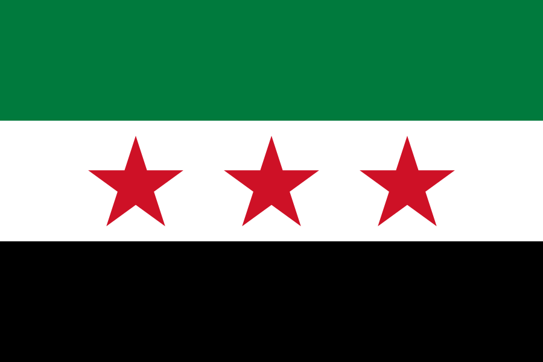

Syria
 Israel
Israel Palestine
Palestine Saudi Arabia
Saudi ArabiaShort facts
RegionWestern Asia / Middle East / Levant
LanguageArabic
Time zoneEET (UTC+2)
Drives onRight
Worth seeing
- Palmyra (Tadmor): Ancient caravan oasis city and magnificent Roman ruins in the Syrian desert.
- Damascus Old City: UNESCO-listed one of the world's oldest capitals, with the Umayyad Mosque and grand souqs.
- Krak des Chevaliers: One of the world's best-preserved Crusader castles, a UNESCO masterpiece.
Planning questions
What is Syria known for?Palmyra (Tadmor), Damascus Old City, Krak des Chevaliers.
What is the capital?Damascus.
Which language is useful?Arabic.
When is the national day?17 April.
How should I browse it here?Start with the facts, jump to linked cities, then check events and topics.
Upcoming events
No future Syria-linked events are active in the current dataset.
Food & drink
 Kebab
Kebab Tea
TeaKnown for
Palmyra (Tadmor)Damascus Old CityKrak des ChevaliersDamascusKebabTea
 Music & Culture
Music & Culture Asia outdoors
Asia outdoors